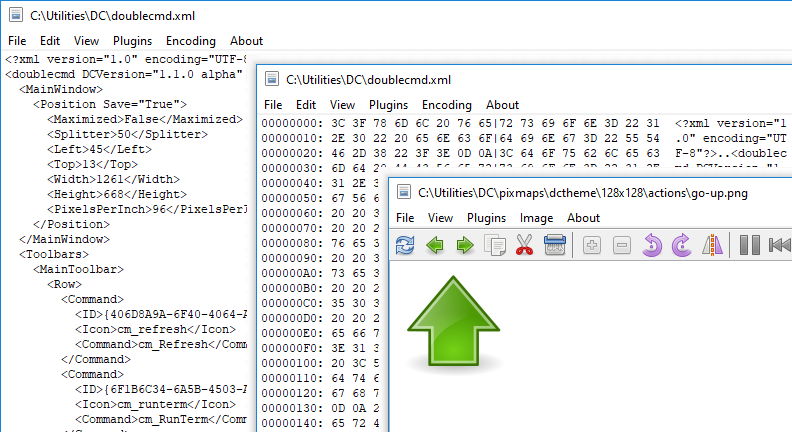
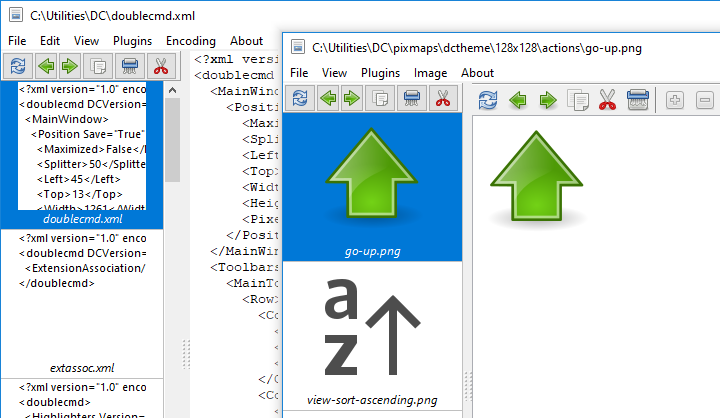
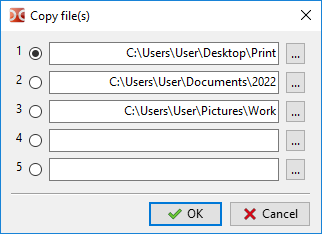

The built-in viewer is designed to view files of any size in text, hexadecimal or binary format and image files.

The selected text will be automatically copied to the clipboard.
By default, the viewer call is assigned to the F3 key, we can change this in the settings. A quick view mode (Ctrl+Q) is also available: instead of a separate window, the opposite (inactive) file panel will be used.
Supported image formats: BMP, CUR, GIF, ICNS, ICO, JPEG, PNG, PNM (PBM, PGM and PPM), PSD, SVG/SVGZ(Alpha version), TIFF, XPM. In addition, if the required libraries are available:
HEIF/HEIC and AVIF: libheif-1.dll (Windows) or libheif.so.1 (Linux and other Unix-like systems).
WebP: libwebp.so.n, where "n" is 7, 6 or 5 (Linux and other Unix-like systems).
SVG/SVGZ: librsvg-2-2.dll, libcairo-2.dll and libgobject-2.0-0.dll (Windows) or librsvg-2.so.2, libcairo.so.2 and libgobject-2.0.so.0 (Linux and other Unix-like systems). If these files are available, Double Commander will use the librsvg library instead of the built-in Image32 graphics library.(Alpha version)
Double Commander supports the TurboJPEG library, it is a JPEG codec that uses SIMD instructions to accelerate the decoding and encoding of images: libturbojpeg.dll (Windows), libturbojpeg.so.0 (Linux and other Unix-like systems) or libturbojpeg.dylib (macOS(*)).
Note: In Windows, libraries must be located near the Double Commander executable file or in the PATH.
Double Commander supports Windows Imaging Component (Windows Vista and newer)(Alpha version): the Windows Imaging Component (WIC) provides an extensible framework for working with images. WIC includes several built-in codecs (BMP, DDS, GIF, ICO, JPEG, JPEG, XR, PNG and TIFF), additionally available external codecs for free and proprietary RAW image formats, HEIF/HEIC, WebP. Double Commander will skip codecs for BMP, GIF, ICO, JPEG, PNG and TIFF, because these formats are already supported.
The built-in viewer supports saving to the following image formats: BMP, ICO, JPEG (we can choose the quality from 1 to 100), PNG (Double Commander will use the same color depth as in the original image) and PNM (Double Commander will use binary formats, the color depth will be set automatically: 1, 8 or 24 bits per pixel).
Note: When modifying an image, we must save all changes with the Save or Save As commands: Double Commander does not check the status of the file (changed or not) when closing the viewer window or when switching to another file.
We can assign or change hotkeys for commands available in the viewer in the Keys > Hot Keys settings section (switch to the Viewer category). Hotkeys can be set separately for text mode and image viewing mode.
The appearance and content of the main menu depends on the viewing mode: text, image or WLX plugin.
Items Previous and Next are used to load the previous or next file in the directory. The sort order in the file panel is used.
Items Save and Save As... are available only when viewing images.
Print... – opens a system dialog for sending a file for printing. Printing is only available when viewed with plugins that support printing files.
Print setup... – opens a dialog for setting the print borders (left, right, top and bottom page margins).
Reload – Double Commander will forcibly reread the file without closing the viewer window. This is convenient if the file has been modified by an external program.
Auto Reload – only for text mode: if enabled, Double Commander will monitor the file size and if it changes, reread the file and scroll its contents to the end. This is convenient for viewing constantly updated log files. This mode applies only to the current file and is disabled when switching to another file or when closing the viewer window.
Exit – Close the viewer window.
The menu contains commands for selecting and copying text, as well as commands for searching through the contents of the file being viewed: Find, Find next and Find previous.
Search options:
Case sensitive – indicates that uppercase should be distinguished from lowercase, e.g. "Fallout" and "fallout" would be different.
Hexadecimal – searches for hexadecimal characters (case insensitive, with or without spaces between characters, for example, "C0 C1 C2" or "c0c1c2").
Regular expressions – if enabled we can use regular expressions.
Backwards – switches the search direction: search from the end of the file instead of searching from the beginning.
This menu is for switching the viewing mode and contains several additional options.
Preview – Show or hide the preview panel.
The program automatically selects the appropriate file viewing mode, the following items allow to switch it forcibly:
Show as Text – Show file contents (or console command output, see File associations) as plain text. We can set the maximum number of characters to be displayed on one text line prior to wrap it up to the next one (1024 by default).
Show as Bin – Show file contents as is. Non-printable characters will be displayed as dots, however, when copying text, control characters (line feed, carriage return, tabulation and so on) will be respected. A fixed line width of 80 characters is used.
Show as Hex – The window will display three columns: offset from the beginning of the file (in bytes), 16 characters in hexadecimal representation and the same 16 characters in plain text. Non-printable characters will be displayed as dots. When selecting values in the second column, the corresponding symbols in the third column will be selected (and vice versa).
Show as Dec – Like the previous, but bytes will be represented in decimal notation.
Show as Book – A special viewing mode: text will be displayed in multiple columns (like a book spread or a newspaper). We can set the font and size, text and background colors, and the number of columns (1, 2 or 3).
Graphics – switches to image viewing. See the list of supported image formats at the beginning of the page.
Plugins – Viewing with WLX plugins. If the selected file can be opened by several installed plugins, then repeated calls of this command will switch them in a circle.
Office XML (text only)(Alpha version) – The viewer will show text from XML-based office documents: Microsoft Office (DOCX, XLSX) and OpenOffice/LibreOffice (ODT, ODS). Without text formatting, but preserving paragraphs.
Plugins have priority over the Graphics and Office XML (text only) modes.
Wrap text(Alpha version) – enables or disables wrapping lines that do not fit in the window (by word boundaries).
Show text cursor – enables the display of a blinking text cursor.
When viewing files in text modes: menu with a list of available text encodings, auto-detection is enabled by default.
When using plugins, this menu includes only three items:
Auto-detect – automatic encoding detection.
ANSI – default system ANSI encoding (depends on user locale).
OEM – default system OEM (DOS) encoding (depends on user locale).
The Image menu will not be available when viewing GIF files.
Stretch – resizes the image so it fills the viewer window (the aspect ratio will be saved automatically).
Stretch only large – resizes the image only if it is larger than the current window size (the aspect ratio will be saved automatically).
Center – The image will be displayed in the center of the viewer window instead of the upper left corner.
Show transparency(Alpha version) – enables the use of a checkerboard pattern as a background for transparent parts of the image.
The Rotate submenu includes several similar actions:
The first three commands rotate the image by a specified number of degrees around its center: + 90 (90 degrees to the right), + 180 and - 90 (90 degrees to the left).
Mirror Horizontally – reverses the image horizontally, that is, from left to right.
Mirror Vertically – reverses the image vertically, that is, from top to bottom.
Zoom In and Zoom Out – commands to change the image scale.
Full Screen – switches the window to full-screen mode (the contents of the window without the operating system's typical window-framing interface). This mode is available not only when viewing images, just use hotkeys (Alt+Enter by default).
The Screenshot submenu – creating a screenshot of the desktop, immediately or with a delay (3 or 5 seconds).
When using plugins, this menu includes only three items: Stretch, Stretch only large and Center.
Just a viewer name.
Several commands of the internal viewer and additional tools, collected in the toolbar. Only when viewing images.
Reload current file – Double Commander will forcibly reread the file without closing the viewer window. This is convenient if the file has been modified by an external program.
Buttons Load Previous File and Load Next File are used to load the previous or next file in the directory. The sort order in the file panel is used.
Copy File – see Copying/moving files.
Move File – see Copying/moving files.
Delete File – will delete the file being viewed with a confirmation request.
Zoom In and Zoom Out – commands to change the image scale.
Rotate -90 degrees – rotates the image by 90 degrees to the left around its center.
Rotate +90 degrees – rotates the image by 90 degrees to the right around its center.
Mirror – The Mirror Horizontally command: reverses the image horizontally, that is, from left to right.
The next group is for GIF animation only:
Pause/Play – pauses animation playback.
Previous Frame and Next Frame – switch animation frames back and forth.
Export Frame – allows to save the current animation frame.
The next group of buttons is related to selection:
Highlight – turns on the selection tool (rectangle).
Crop – crop image by selection.
Red Eyes – red-eye removal function.
The next group of buttons is related to drawing:
Paint – enables drawing tools.
Undo – cancels the last action.
Menu for selecting a drawing tool: Pen, Rect and Ellipse.
Width – Menu for selecting the line width (from 1 to 25 pixels).
Color – allows to set the color of the line.
Resize – The image resizing tool allows to specify the width and height in pixels (the aspect ratio will be saved automatically).
Full Screen – switches the window to full-screen mode (the contents of the window without the operating system's typical window-framing interface) and back. This mode is available not only when viewing images, just use hotkeys (Alt+Enter by default).
When the window is expanded to full screen, an additional Slide Show button will become available: we can enable automatic loading the next image in the current directory and set the file display time (from 1 to 25 seconds).
The appearance and content of the status bar depends on the viewing mode: text, image or WLX plugin.
At the beginning of the status bar, the number of the open file and the total number of files in the current directory are displayed.
Text: position in the file content (in bytes and percentages), file size and text encoding.
Image: current resolution (in pixels and percentages), real file resolution and selection size (when using the selection tool).
WLX plugin: plugin name and encoding.
At the ending of the status bar, the full name of the file being viewed is displayed.
Panel in the left part of the window, catalog files are displayed as thumbnails (with the file name below the thumbnail). It looks like the thumbnail mode in the file panel.

The sort order in the file panel is used. The file with which the viewer was launched will always be the first in the list.
The preview panel can be expanded to display a list of thumbnails in multiple columns.
Separate toolbar with several frequently used functions: Reload current file, Load Previous File, Load Next File, Copy File, Delete File and Move File, see description of similar buttons above.
The viewer has the ability to copy or move the viewed file using hotkeys or buttons on the toolbar or on the preview panel (internal viewer commands cm_CopyFile and cm_MoveFile). We can specify up to 5 directories and switch between them:

This is convenient if we need to put the viewed files into different directories or make an additional copy.
See the description of the Double Commander settings sections: Tools > Viewer.